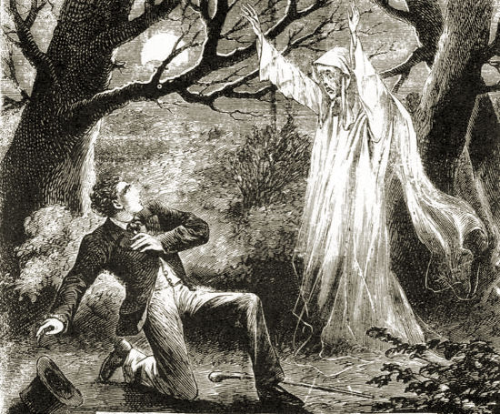

Cursed Gravestones
In Early 1900's , there was a grave of a man that came back to haunt his relatives every single night, this stopped once his gravestone was buried deep in a landfill in a gravel form by a mining company.
Your source of oddities around the world (by my standards).
This page was created for everything interesting in spooky,otherworldly and bizarre. In time we hope to create an encyclopedia of strange and unexplaineder occurrences.
In Early 1900's , there was a grave of a man that came back to haunt his relatives every single night, this stopped once his gravestone was buried deep in a landfill in a gravel form by a mining company.

story coming.
If you have any questions or want to share your own stories, feel free to contact us.